Практичні курси · журнал «ДентАрт» 2017 №2
Агресивний пародонтит. Частина I
AGGRESSIVE PERIODONTITIS. PART I
Cьогодні у пародонтології практично не існує суперечливих думок щодо етіологічних, патоморфологічних, діагностичних імунологічних та гістологічних аспектів, пов'язаних з пародонтитом. Однак залишаються актуальними питання диференціальної діагностики різних форм пародонтиту, які мають низку клінічних відмінностей.
Агресивний пародонтит зустрічається рідко, і тому він недостатньо добре вивчений. У зв'язку з цим лікарі часто вважають, що диференціальна діагностика між хронічним і агресивним пародонтитом необов'язкова, складна, а часом навіть неможлива. Така постановка питання призводить до неправильного клінічного мислення. Мета публікації полягає у висвітленні цієї проблематики, а дані, подані у статті, демонструють відмінності між хронічним та агресивним пародонтитом, і це дозволяє швидше виявляти початкові форми пародонтиту і якісно проводити диференціальну діагностику, що в подальшому вплине як на планування, так і на результати лікування, їх стабільність.
На всесвітньому з'їзді у 1999 році, присвяченому класифікації захворювань пародонту, прийнято міжнародний нозологічний термін «агресивний пародонтит», що заміняє колишні назви, такі, як рефракторний, блискавичний, швидко прогресуючий та ін. форми. Ці терміни не згадуються в жодній із чинних класифікацій і не можуть бути внесені в медичну карту хворого, однак застарілі назви ще трапляються в україно- та російськомовних публікаціях. За такої невідповідності клініцист, безумовно, відчуває труднощі при формулюванні остаточного діагнозу.
Пародонтит — це багатофакторне інфекційне захворювання, викликане специфічними грамнегативними бактеріями, що містяться у біоплівці зубної бляшки. Порушення балансу між бактеріальною інфекцією і захисними властивостями організму-господаря вважається детермінантом розвитку цього захворювання.
Агресивний пародонтит, як і хронічний, — це інфекційне дистрофічно-запальне захворювання тканин пародонтального комплексу, але на відміну від хронічного пародонтиту воно характеризується постійним прогресуванням без періодів затихання, яке спричиняє швидку втрату прикріплення, швидку втрату альвеолярної кістки, і часто має сімейний характер. Синонімом «агресивний» у медицині є слово «активний», і якщо ми говоримо про запалення чи про дистрофічно-запальний процес з агресивним перебігом, то маємо на увазі взаємодію сильного пошкоджуючого фактора/ів та активну реакцію з боку організму. При цьому тривалість відповідної реакції залежить від тривалості дії шкідливого чинника.
Цікаво зазначити, що термін «хронічний пародонтит» починає застосовуватися з 1948 р., в той час як більш ранні публікації проіндексовані з терміном «агресивний пародонтит». Це свідчить про те, що ці терміни почали мати різний контекст у першій половині минулого століття.
Протягом більше 100 років у науковій літературі агресивний пародонтит у молодих людей трактували як «пародонтит, викликаний наявністю тонкого шару зубного нальоту за повної відсутності зубного каменю». Сучасні вчені не поділяють агресивні і хронічні форми пародонтиту за наявністю зубних відкладень. Можливо, це пов'язано з некоректним підходом на етапах діагностики, але в більшості випадків столітній практичний досвід клініцистів підтверджує існуюче архаїчне твердження.
Епідеміологія
Для пародонтиту характерний високий ступінь поширеності (понад 80%) у всьому світі, і лише у 5-10% усіх випадків він має агресивну форму (Papapanou, 1996). У світовій літературі опубліковано величезну кількість даних епідеміологічних досліджень, присвячених пародонтитові (Miyazaki і співавт., 1991; Brown, Loe, 1993; AAP, 1996; Oliver і співавт., 1998), при цьому лише деякі автори окремо виділяють агресивний пародонтит (АП). Найпоширенішим є хронічний пародонтит (ХП), який має повільний перебіг; він добре вивчений епідеміологами. Поширеність АП у світі різна, його частіше виявляють у осіб темношкірої раси: 0,1-0,2% — Європа, 0,8% — Нігерія, 3,7% — Бразилія. Справжні агресивні форми у Європі та США зустрічаються дуже рідко (2-5% усіх випадків), у Європі локалізований АП виявлено у 0,1% молодих людей, в Азії та Африці рівень захворюваності вищий, до 5% (Saxen, 1980; Saxby, 1984, 1987; Kronauer і співавт., 1986).
Етіологія і патогенез усіх форм пародонтиту принципово схожі. Першопричиною пародонтиту є мікробний фактор (пародонтопатогени зубного нальоту), і сьогодні пародонтит можна охарактеризувати як Aggregatibacter (колишня назва Actinobacillus) actinomycetemcomitans (Аа) і/або Porphyromonas gingivalis (Pg) — асоційоване захворювання. Сучасна тенденція — усе більша увага звертається на визначення механізму впливу різних параметрів імунного статусу, медіаторів і факторів ризику: вони також відповідальні за виникнення захворювання, особливості перебігу та за швидкість його розвитку.
Номенклатура і класифікація
З 1999 року сучасна і найдокладніша із чинних класифікацій захворювань пародонту базується на висновку першого міжнародного симпозіуму Американської академії пародонтології (ААР) та Європейської федерації пародонтологів (EFP). Вона заснована на динамічних і патобіологічних критеріях (Armitage, 1999) і передбачає три форми пародонтиту:
— хронічний пародонтит (тип II, раніше пародонтит дорослих)
А. локалізований
В. генералізований
— агресивний пародонтит (тип III, раніше блискавичний пародонтит, або швидко прогресуючий)
А. локалізований
В. генералізований
— некротичний пародонтит (тип V, підтип В/виразково-некротичний пародонтит, раніше виразково-некротичний пародонтит дорослих).
Ці вісім груп (типів) захворювань пародонту, що становляють згадану класифікацію, можна знайти у посібниках та атласах, поданих у списку літератури.
У міру нагромадження наукових даних у галузі мікробіології, патогенезу, особливо механізму відповіді організму-господаря на інфекційну атаку, діагностика та номенклатура (нозологія) не могли і не можуть довго базуватися на клінічному перебігу захворювання. З 1999 року визначення пародонтит дорослих визнано неспроможним, оскільки більшість цих випадків характеризується повільним перебігом, для яких прийнято визначення — хронічний пародонтит. Також поняття блискавичний, або швидко прогресуючий пародонтит замінені на єдиний термін — агресивний пародонтит.
Чинна патобіологічна номенклатура різних форм пародонтиту не є остаточною. У 2017 році робоча група провідних європейських пародонтологів планує офіційне внесення поправок у класифікацію 1999 року.
У свою чергу міжнародна класифікація хвороб (МКХ-10) класифікує пародонтит на:
— К 05.2. Агресивний пародонтит
— К 05.21. Агресивний пародонтит, локалізований
— К 05.22. Агресивний пародонтит, генералізований
— К 05.3. Хронічний пародонтит
— К 05.31. Хронічний пародонтит, локалізований
— К 05.32. Хронічний пародонтит, генералізований
Залежно від поширення ураження пародонтит розподіляється на дві форми: локалізовану (залучення у патологічний процес до 30% від загальної поверхні тканин, що оточують зуби) і генералізовану (30%).
Момент початку клінічних проявів пародонтиту залежить від стадії патологічного процесу, форми захворювання, динаміки перебігу, активності мікробного фактора і резистентності організму. Хвороба може виникнути у будь-якому віці, і в більшості випадків вона розвивається з гінгівіту, зумовленого впливом зубної бляшки. При ХП патологічний процес поширюється нерівномірно і часто локалізується в ділянках скупчення мінералізованих зубних відкладень, котрі, як правило, відповідають зоні вивідних протоків слинних залоз. У той же час біля тих самих груп зубів, але без великого нагромадження зубних відкладень, відбувається ураження тканин пародонту при первинному АП.
Слід враховувати, що при локалізованому АП може спостерігатися досить слабке запалення ясен, незважаючи на виражену втрату прикріплення. Додаткова наявність незмінних (спадкових) і змінних (наприклад, куріння) факторів ризику може призводити до підвищення рівня медіаторів запалення, що значно ускладнює перебіг захворювання та у свою чергу формує яскравішу клінічну картину при візуальному обстеженні. У той же час у прихованій під'ясенній зоні відбувається прогресуюча апікальна міграція пародонтопатогенів, яка за короткий період посилює деструктивний процес, охоплюючи все глибші ділянки пародонтальної зв'язки, альвеолярну кістку і весь опорноутримуючий апарат зуба.
Ряд авторів вказують на те, що локалізований АП, як правило, характеризується початком розвитку в пубертатному періоді, підвищенням титру антитіл сироватки на пародонтопатогени, ураженням перших молярів і різців, вираженою апроксимальною втратою прикріплення в зоні щонайменше двох постійних зубів, один з яких перший моляр, і додатково можуть уражатися один чи два інших зуби, які не є першими молярами і різцями. Генералізований АП виникає переважно із 30-річного віку, починається також у зоні перших молярів і різців і поширюється на тканини пародонту зубів, які стоять поруч (фото 1). При визначенні титру антитіл на хвороботворні патогени не фіксується їх підвищення, характерне постійне прогресування з генералізованою втратою прикріплення, переважно з апроксимальних поверхонь зубів. Незалежно від форми захворювання, додаткові фактори ризику, такі як куріння, емоційний стрес, медикаментозний вплив, зміна гормонального фону і т.п., сукупно посилюють деструктивно-запальний процес.
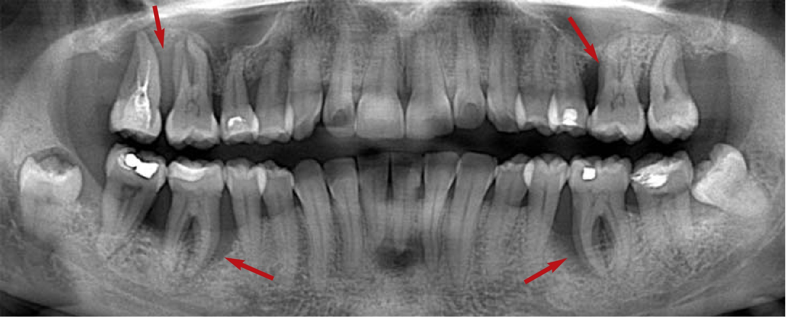
Фото 1. Пацієнт І., 40 років, діагноз — агресивний пародонтит тяжкого ступеня (тип III). Стрілками вказано ділянки деструкції кісткової тканини в зоні перших молярів.
Більшість форм пародонтиту має стрибкоподібний перебіг, стадії загострення при ХП чергуються з періодами ремісії. У деяких випадках хронічна форма захворювання може переходити в агресивну (вторинний АП), наприклад, з віком, коли імунний статус слабшає. Для легшого клінічного розуміння можна подивитися на перебіг АП з точки зору гострого запалення, проте через відсутність такого формулювання у літературних джерелах ми не використовуємо таку термінологію, як не використовуємо і поняття первинний та вторинний АП.
Ступінь тяжкості пародонтиту класифікується в залежності від наявності деструкції кістки і клінічної втрати прикріплення (сума глибини пародонтальної кишені і рецесії): легкий (1-2 мм), середній (3-4 мм) і тяжкий (5 мм і більше). ААР пропонує визначати ступінь тяжкості пародонтиту (слабкий, середній, тяжкий), враховуючи не лише глибину пародонтальних кишень, але й ступінь запалення ясен, рівень втрати кісткової тканини і втрати прикріплення, ураження зони фуркації і ступінь рухливості зуба. Крім ступенів levis (легкий), medis (помірний) і gravis (тяжкий), додатково використовується термін complicata (ускладнений) — у випадках, коли діагностуються дво-, одностінкові чи комбіновані кісткові кишені, дефекти фуркації II чи III ступеня або зуб сильно рухливий (Lindhe, 1997).
Хронічний пародонтит (тип II), раніше пародонтит дорослих, — найпоширеніша форма пародонтиту, розвивається у віці 30-40 років, зазвичай на фоні гінгівіту. Розвитку ХП обов'язково передує тривалий вплив місцевих несприятливих факторів, що сприяють утворенню мінералізованих зубних відкладень через особливості анатомії і скупченість зубів, гіпоплазію, ділянки нависання країв пломб, незнімних ортопедичних конструкцій, а також безпосередньо незадовільна гігієна ротової порожнини. Для локалізованої форми (тип II A) характерне осередкове ураження кісткової тканини, а при генералізованій формі (тип II B) тканини пародонту уражені в зоні всіх груп зубів з різним ступенем тяжкості, що зумовлено неоднаковою тривалістю впливу місцевих несприятливих факторів.
При ХП спостерігаються різноманітні ознаки запалення ясен різного ступеня, і одночасно можуть зустрічатися ділянки як атрофії (рецесії), так і фіброзного потовщення ясен. Такі фактори ризику, як активне куріння, приєднання системних захворювань, інтерлейкін-1-позитивний генотип, можуть посилювати перебіг процесу, і можливий перехід типового перебігу ХП в агресивну форму, що супроводжується згаданими вище ознаками. У літніх пацієнтів ХП призводить до втрати зубів — переважно через те, що знижується імунний захист і частішають загострення. Періоди загострення ХП виникають з досить великими інтервалами, і для них характерна наявність пародонтальних абсцесів (фото 2, 3).
Агресивний пародонтит (тип III, підтип A, локалізований), раніше блискавичний пародонтит, або локалізований юнацький пародонтит. При локалізованій формі агресивного пародонтиту в патологічний процес залучені від трьох до шести зубів, і як правило, це перші моляри та різці, при цьому візуальні ознаки запалення ясен можуть бути непомітними (фото 4).
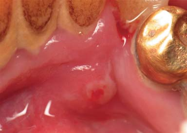
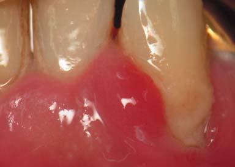
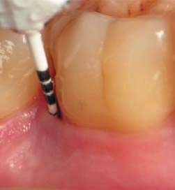
Фото 2, 3. Пацієнт Є., 45 років, діагноз — хронічний генералізований пародонтит середнього ступеня, стадія загострення (тип II). При первинному огляді визначаються візуальні ознаки запалення ясен, рясне скупчення зубних відкладень, наявність пародонтальних абсцесів з вестибулярної та оральної поверхонь у зоні зуба 33.
Фото 4. Пацієнт І., 40 років, діагноз — агресивний пародонтит тяжкого ступеня (тип III). Візуально спостерігається відсутність зубних відкладень і виражених ознак запалення ясен. Глибина пародонтальної кишені — 7,5 мм у зоні дистально-щічної поверхні зуба 46.
Агресивний пародонтит (тип III, підтип B, генералізований), раніше блискавичний пародонтит, або швидко прогресуючий пародонтит, зустрічається відносно рідко (Page і співавт., 1983; Miyazaki і співавт., 1993; Lindhe і співавт., 1997; Armitage, 1999). Серед дорослих у більшості випадків агресивний пародонтит діагностується у віці від 20 до 30 років, однак не існує верхньої вікової межі. У жінок це захворювання зустрічається частіше, ніж у чоловіків. Ступінь тяжкості і локалізація втрати прикріплення можуть варіювати. У пацієнтів з генералізованою формою агресивного пародонтиту у більшості випадків візуально визначається запалення ясен.
Після проведення лікувальних заходів зберігається ризик рецидивів захворювання. Причина активізації патологічного процесу — специфічні мікроорганізми біоплівки (Аа, Pg та ін.), які потрапляють в уражені тканини. Картину захворювання можуть посилювати фактори ризику (куріння, загальні захворювання, наприклад діабет, психологічне напруження, стрес) та медіатори запалення, які знижують імунний статус.
Діагностика пародонтиту базується на анамнезі, клінічних, рентгенологічних даних і, як правило, не вимагає додаткової лабораторної діагностики, але в деяких випадках вона може бути затребуваною.
Відмінності в клінічному перебігу хронічного і агресивного пародонтиту можна пояснити з точки зору варіації інтенсивності бактеріальної атаки (кількості та вірулентності мікроорганізмів зубної бляшки), факторів опірності організму (імунний статус і спадковість), а також супутніми факторами ризику.
Слід враховувати, що практична діагностика стану тканин пародонту передбачає дослідження всіх ділянок пародонту навколо кожного зуба у шести точках і в комплексі повинна бути спрямована як на клінічне, так і на рентгенологічне визначення ступеня тяжкості захворювання.
Отже, при обстеженні пацієнта і постановці діагнозу слід не лише враховувати форму клінічного перебігу (агресивна чи хронічна), але і встановити, яким є ступінь дистрофічно-запальних змін тканин пародонту, інакше кажучи, визначити ступінь тяжкості пародонтиту для кожного зуба. Недостатньо визначати форму і усереднений ступінь тяжкості пародонтиту для всієї ротової порожнини, треба визначати рівень втрати прикріплення для кожного зуба окремо, оскільки майже завжди пародонтит розвивається з різною швидкістю на різних ділянках ротової порожнини, у різних зубів і навіть на різних поверхнях одного зуба. Встановлена ступінь тяжкості пародонтиту, яка відповідає рівню втрати прикріплення для окремого зуба, свідчитиме про попередній прогноз для кожного зуба і необхідний обсяг лікувальних заходів. Для досягнення цих цілей зіставляються рентгенологічні ознаки стану кісткової тканини та дані пародонтальної карти, що відображають патологічну топографію рівня прикріплення тканин до зуба (рис. 1, фото 5).
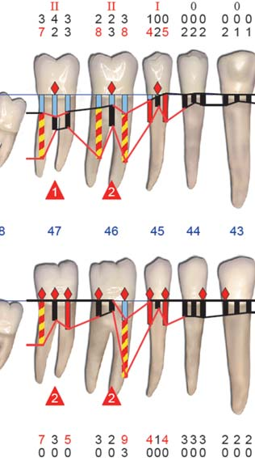
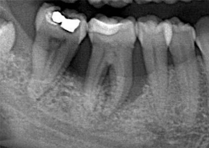
Рис. 1. Пацієнт І., 40 років, діагноз — агресивний пародонтит тяжкого ступеня (тип III). Фрагмент пародонтограми в зоні зубів 47-44, що відображає нерівномірну втрату прикріплення.
Фото 5. Пацієнт І., 40 років, діагноз — агресивний пародонтит тяжкого ступеня (тип III). Фрагмент ортопантомограми в зоні зубів 47-44, що відображає виражену деструкцію кісткової тканини.
Прогноз і потребу в лікуванні визначають на підставі діагностичних критеріїв, клінічного перебігу, локалізації і ступеня тяжкості. Принципи лікування АП аналогічні лікуванню ХП і спрямовані на механічну та медикаментозну елімінацію критичної маси пародонтопатогенів із пародонтальної кишені з подальшим тривалим контролем над утворенням зубних відкладень, на створення умов для загоєння очищеної пародонтальної рани у вигляді формування біологічно адаптованої поверхні кореня зуба і видалення грануляцій, а також на усунення змінюваних факторів ризику та підвищення резистентності макроорганізму.
Як правило, ХП успішно лікується методом традиційного механічного очищення інфікованої пародонтальної кишені, але за відсутності лікування всі форми пародонтиту прогресують з різною швидкістю. На практиці ми все частіше бачимо, що стабільніші клінічні ситуації спостерігаються при активному сприянні з боку пацієнтів, де важливу роль відіграє ступінь індивідуальної гігієни.
Обсяг втручань при АП і при ХП такого ж ступеня тяжкості відрізнятиметься, що зумовлено різною глибиною поширення запального процесу в пародонтальній рані, складом мікрофлори і швидкістю відповідної реакції на терапевтичні втручання.
Нині актуальною залишається глобальна світова проблема, пов'язана зі збільшенням кількості антибіотикорезистентних штамів мікроорганізмів та грибкових інфекцій, і про це говорять усі передові медичні спільноти. Дослідження вказують на те, що призначення антибактеріальних препаратів (системна та/або місцева доставка) рекомендоване при лікуванні пацієнтів з АП, у випадках множинних пародонтальних абсцесів у стадії загострення ХП та з метою профілактики ускладнень (наприклад, інфекційного ендокардиту, транзиторної бактеріємії тощо). У той же час доведено, що лікування пацієнтів з ХП у більшості випадків не передбачає системного прийому антибіотиків.
АП є проблемою для клініцистів, оскільки він зустрічається рідко, а передбачуваність успіху лікування варіюється від одного пацієнта до іншого. Поєднання традиційного лікування з антимікробною терапією та подальшого ретельного догляду на сьогодні є оптимальним, науково обґрунтованим методом лікування АП. У той же час триває вивчення альтернативних ад'ювантних методів лікування, які можуть виявитися перспективними в терапії пацієнтів з АП.
Клінічний приклад
Подаємо трирічне клінічне спостереження пацієнта 45 років з діагнозом агресивний генералізований пародонтит тяжкого ступеня, що виник на тлі несприятливих місцевих і загальних факторів. На момент звернення (09/2012) пацієнт скаржився на біль і кровоточивість ясен, дискомфорт, пов'язаний з рухливістю зубів, неможливість відкушування твердої їжі, неприємний запах з рота і страх втратити зуби. Психоемоційний статус пацієнта обтяжений соціально-економічними проблемами. Скарги з'явилися близько двох з половиною років тому (від моменту звернення) і мали тенденцію до посилення протягом останніх шести місяців. За цей період пародонтологічне лікування не провадилося, за винятком професійної гігієни. Загальносоматичні захворювання не виявлені. Не курить.
При зовнішньому огляді конфігурація обличчя, шкіра і видимі слизові оболонки без патологічних змін. Регіонарні лімфатичні вузли не збільшені.
Об'єктивно визначаються набряк, альвеолярна гіперемія і вогнищевий маргінальний ціаноз слизової оболонки верхніх і нижньої щелеп (фото 6). При пальпації альвеолярної частини ясен визначаються виділення серозно-гнійного ексудату з пародонтальних кишень, рухливість зубів I-III ступеня тяжкості. При змиканні зубних рядів у фронтальній ділянці виявлена травматична оклюзія. При ортопантомографічному обстеженні верхніх і нижньої щелеп визначається генералізована нерівномірна деструкція альвеолярних відростків (фото 7).
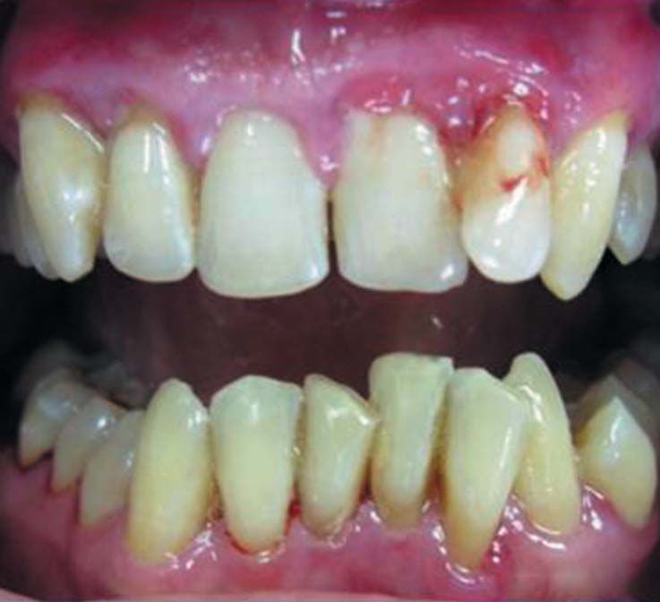
Фото 6. Пацієнт Л., 45 років, діагноз — агресивний генералізований пародонтит тяжкого ступеня. Наявність виражених візуальних ознак запалення ясен при первинному огляді (09/2012).
Початковий індекс зубного нальоту, кровоточивості, глибина пародонтальних кишень, рівень рецесії, ступінь рухливості зубів і ураження зон фуркації відображені на пародонтальній карті (рис. 2). Виявлена гноєтеча з пародонтальних кишень усіх зубів верхніх щелеп. При обстеженні встановлено несприятливий прогноз для зубів 38, 47, 48, сумнівний прогноз для зубів 12-22, 26, 27, 46. Для решти зубів попередній прогноз сприятливий. Поставлено діагноз агресивний генералізований пародонтит тяжкого ступеня.
З огляду на наявність зон рецесії на ділянці зубів 13, 12, 22, 23, 33-43 можна припустити, що агресивній формі передував хронічний перебіг пародонтиту.
У процесі лікування усунено місцеві несприятливі фактори, що впливають на розвиток дистрофічно-запальних процесів у тканинах пародонту і збереження зубів. Лікувальні заходи здійснювалися з інтервалом три місяці протягом перших двох років і передбачали поетапне проведення всіх фаз комплексного пародонтологічного лікування, спрямованого на створення умов для загоєння пародонтальної рани, комплексну реабілітацію, досягнення клінічного благополуччя і стабілізації.
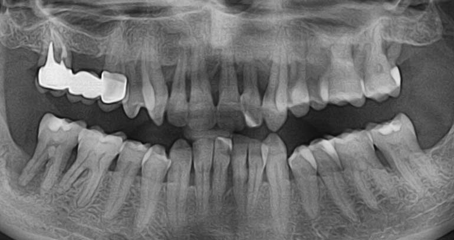
Фото 7. Пацієнт Л., 45 років, ортопантомограма, діагноз — агресивний генералізований пародонтит тяжкого ступеня (09/2012). Визначається генералізована нерівномірна кісткова деструкція.
Для усунення рухливості зубів 13-23 було використано напівпостійне незнімне шинування. Результати лікування можна бачити на пародонтограмах, де вказані індекси зубного нальоту, кровоточивості, глибина пародонтальних кишень, рівень рецесії, ступінь рухливості зубів та ураження зон фуркації через 6 місяців і три роки після лікування (рис. 3, 4), а також на ортопантомограмі (фото 8) та клінічних фотографіях (фото 11-13).
Профілактичні заходи передбачали навчання індивідуальній гігієні ротової порожнини і контроль за її здійсненням.
Однак навіть стійке клінічне благополуччя для більшості зубів, досягнуте через 6 місяців після початку лікування, і підтримання цього стану протягом трьох років не дозволяють говорити про настання стійкої ремісії, бо існує осередок деструкції періапікальних і пародонтальних тканин у зоні зуба 47. Пацієнт довго відмовлявся від видалення цього зуба, який із самого початку мав несприятливий прогноз, і лише у травні 2016 року дав згоду на його видалення (фото 9, 10).
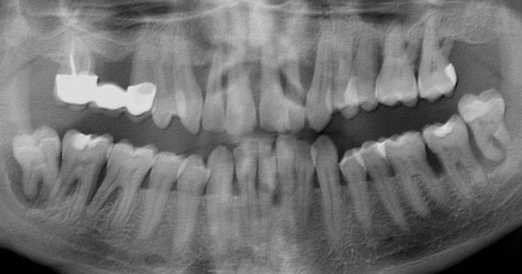
Фото 8. Пацієнт Л., ортопантомограма, діагноз — агресивний генералізований пародонтит тяжкого ступеня (09/2015). Стан кісткової тканини через три роки після лікування. У зоні зуба 47 зберігаються ознаки прогресуючої деструкції кісткової тканини.
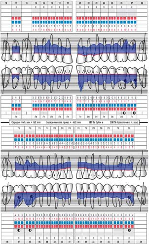
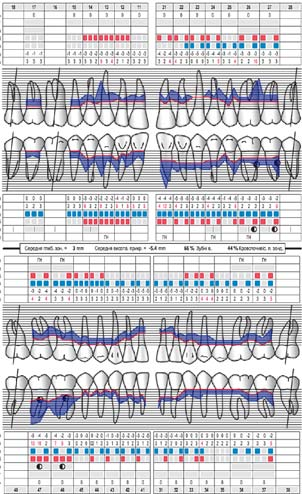
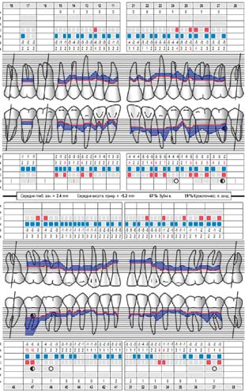
Рис. 2. Пацієнт Л., пародонтальна карта до лікування, діагноз — агресивний генералізований пародонтит тяжкого ступеня (09/2012).
Рис. 3. Пацієнт Л., пародонтальна карта через 6 місяців після лікування, діагноз — агресивний генералізований пародонтит тяжкого ступеня, стадія клінічного благополуччя (03/2013).
Рис. 4. Пацієнт Л., пародонтальна карта через три роки після лікування, діагноз — агресивний генералізований пародонтит тяжкого ступеня, стадія ремісії (09/2015).
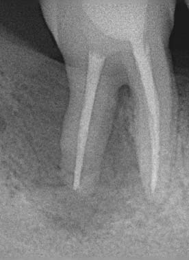
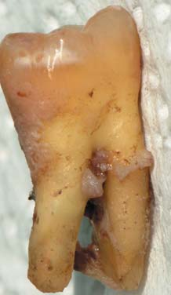
Фото 9. Пацієнт Л., інтраоральна рентгенограма зуба 47, діагноз — агресивний генералізований пародонтит тяжкого ступеня (05/2016). Несприятливий стан кісткової тканини через 3,5 роки після пародонтологічного та ендодонтичного лікування.
Фото 10. Рясне скупчення м'якого зубного нальоту у верхній третині і наявність резорбційних лакун цементу в нижній третині дистальної поверхні видаленого зуба 47 вказують на неспроможність лікувальних заходів у цій зоні.
Коротко подане клінічне спостереження пацієнта з агресивним генералізованим пародонтитом є практичним прикладом лікування, при якому можна стабілізувати стан тканин пародонту для більшості зубів, зберегти природні зуби із сумнівним прогнозом. Воно підтверджує, що коректно встановлені форма і ступінь тяжкості пародонтиту визначають потрібний обсяг лікувальних заходів і результат захворювання для кожного зуба.
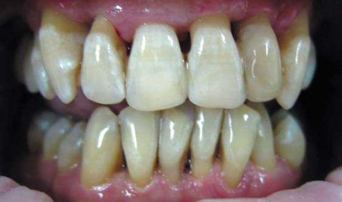
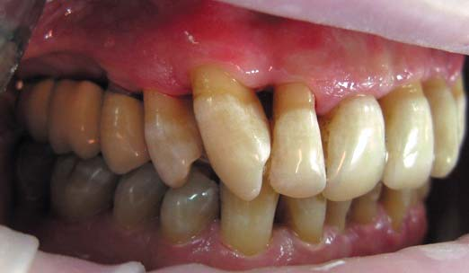
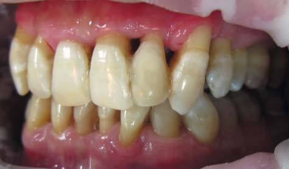
Фото 11, 12, 13. Пацієнт Л., діагноз — агресивний генералізований пародонтит тяжкого ступеня, стадія клінічного благополуччя (09/2015). Фото клінічного стану ясен у прямій і бічних проекціях через 3 роки після початку лікування. Візуально спостерігаються множинні рецесії, відсутність ознак запалення слизової оболонки, ясна щільно охоплюють шийки зубів, гігієна ротової порожнини задовільна.
Висновки
1. Незважаючи на те, що діагностичний і лікувальний підходи до деструктивно-запальних форм пародонтиту принципово схожі між собою, ХП і АП мають низку істотних клінічних відмінностей, і ось деякі з них:
— глобальна і національна поширеність АП значно нижча (від 1% до 10% в осіб віком до 35 років) у порівнянні з ХП, де ця патологія охоплює від 35% до 50% осіб середнього віку і 90-100% осіб старшої вікової категорії;
— у більшості випадків початок розвитку АП відбувається у більш молодому віці, але при цьому немає фіксованої верхньої межі віку, що вказує на приналежність до цієї форми пародонтиту (Armitage, 2010);
— системний запальний профіль незалежно від віку аналогічний як при хронічних, так і при агресивних формах пародонтиту, отже, диференціальна діагностика між ХП і АП на цьому рівні неактуальна (Cairo, 2010);
— аналіз літературних даних свідчить, що за один і той же період середня швидкість втрати клінічного прикріплення у пацієнтів з АП у 3-4 рази вища у порівнянні з ХП, але цей показник дуже важко оцінити через дію безлічі місцевих і системних факторів, які впливають на процес деструктивних змін у пародонті;
— скарги з боку пацієнтів більш виражені у випадках АП, тоді як ХП не завдає суттєвого занепокоєння протягом багатьох років, і часто такі пацієнти звертаються за допомогою на пізніх, ускладнених стадіях розвитку захворювання.
2. Хронічний перебіг пародонтиту може переходити в агресивну форму захворювання або у стадію загострення хронічного запалення при зниженні резистентності організму. Варіантом відносно сприятливого результату лікування АП може стати хронічний перебіг.
3. Незалежно від типу пародонтиту лікування має бути спрямоване на створення умов для загоєння пародонтальної рани і підвищення загальносоматичного статусу пацієнта, а високий ступінь мотивації і співробітництво з боку пацієнта у більшості випадків є запорукою успішного пародонтологічного лікування.
4. Правильно встановлена форма пародонтиту з уточненням ступеня тяжкості по кожному зубу визначає вид і обсяг лікувальних втручань, індивідуальну кратність візитів для своєчасного виявлення скомпрометованих ділянок.
5. АП як найменш поширена форма пародонтиту залишається менш вивченою, ніж ХП, і доки додаткові високоточні дослідження не визначать найефективніший підхід до лікування, лікарі повинні виявляти пильність щодо виявлення клінічних ознак АП на ранніх стадіях розвитку хвороби. Для цих цілей стоматолог будь-якої спеціальності при первинному обстеженні пацієнтів повинен робити пародонтальний скринінг, наприклад, методом індексної оцінки CPTIN (ВООЗ, 1978, Ainamo і співавт., 1982) або його модифікацією — індексом PSR (ADA/AAP, 1992).
Література
- Вольф Герберт Ф. Пародонтология / Герберт Ф. Вольф, Эдит М. Ратеицхак, Клаус Ратеицхак; Пер.с нем.: Под ред. проф. Г. М. Барера. – M.: МЕДпресс-информ, 2008. – 548 с.
- Мюллер Х.П. Пародонтология / Х.П. Мюллер, пер. с нем. – Львов: ГалДент, 2004. – 256 с.
- Armitage GC, Cullinan MP. Comparison of the clinical features of chronic and aggressive periodontitis. Periodontol 2000 2010: 53: 12-27.
- Bouziane A, Benrachadi L, Abouqal R, Ennibi O. Outcomes of nonsurgical periodontal therapy in severe generalized aggressive periodontitis. J Periodontal Implant Sci. 2014;44:201–206.
- Cairo F, Nieri M, Gori AM, Tonelli P. Markers of systemic inflammation in periodontal patients: chronic versus aggressive periodontitis. European Journal of Oral Implantology, 2010 3(2):147-53.
- Demmer RT, Papapanou PN. Epidemiologic patterns of chronic and aggressive periodontitis. Periodontol 2000 2010: 53: 28-44.
- Fine DH, Markowitz K, Furgang D, et al. Aggregatibacter actinomycetemcomitans and its relationship to initiation of localized aggressive periodontitis: longitudinal cohort study of initially healthy adolescents. J Clin Microbiol. 2007;45(12):3859–3869.
- Lang NP, Bartold PM, Cullinan M, et al. International Classification Workshop. Consensus report: aggressive periodontitis. Ann Periodontol. 1999:4:53.
- Madianos PN, Bobetsis YA, Kinane DF. Generation of inflammatory stimuli: how bacteria set up inflammatory responses in the gingiva. J Clin Periodontol. 2005;32 Suppl 6:57-71.
- Smith M, Seymour GJ, Cullinan MP. Histopathological features of chronic and aggressive periodontitis. Periodontol 2000 2010: 53: 45-54.